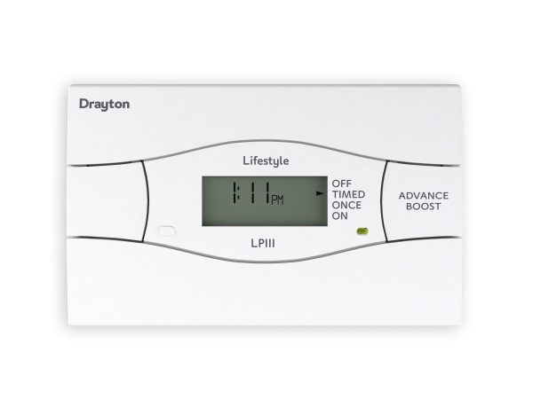
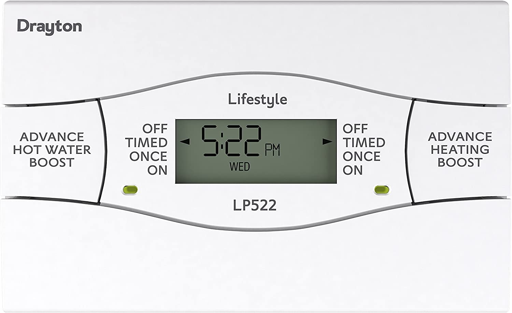
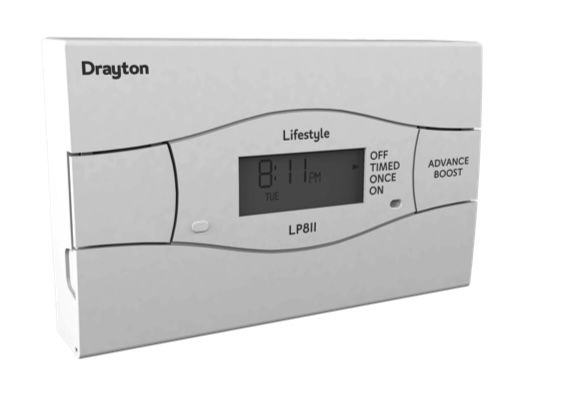
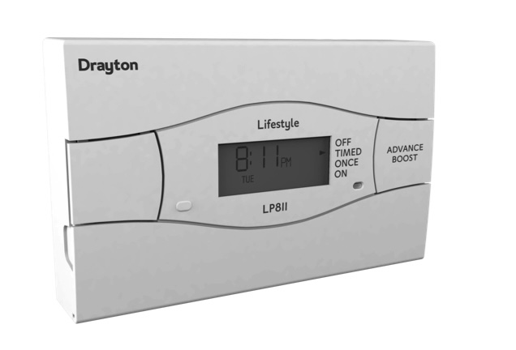
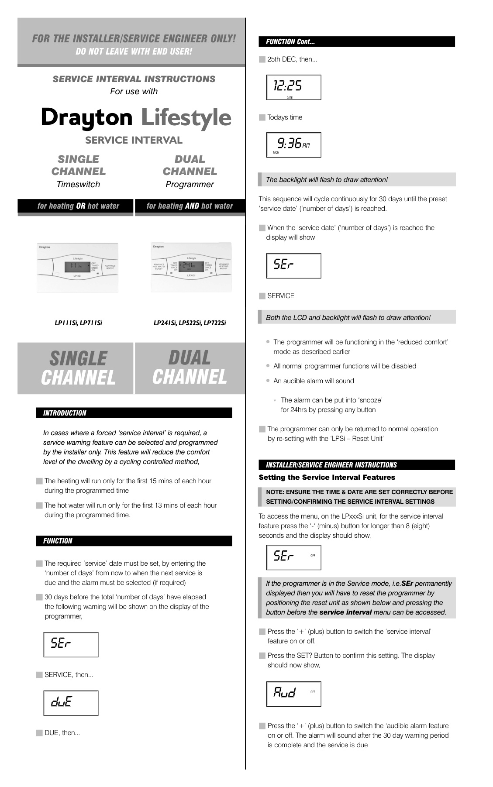
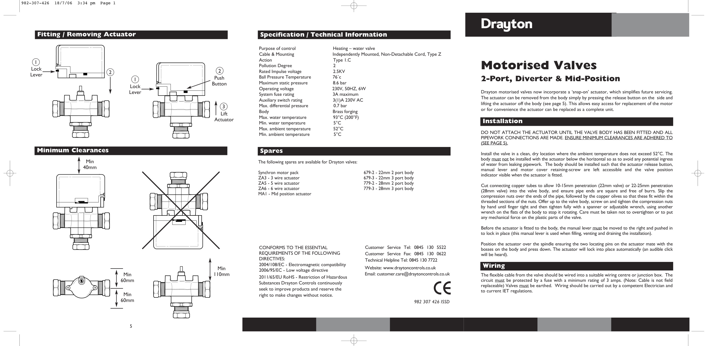
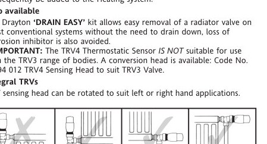
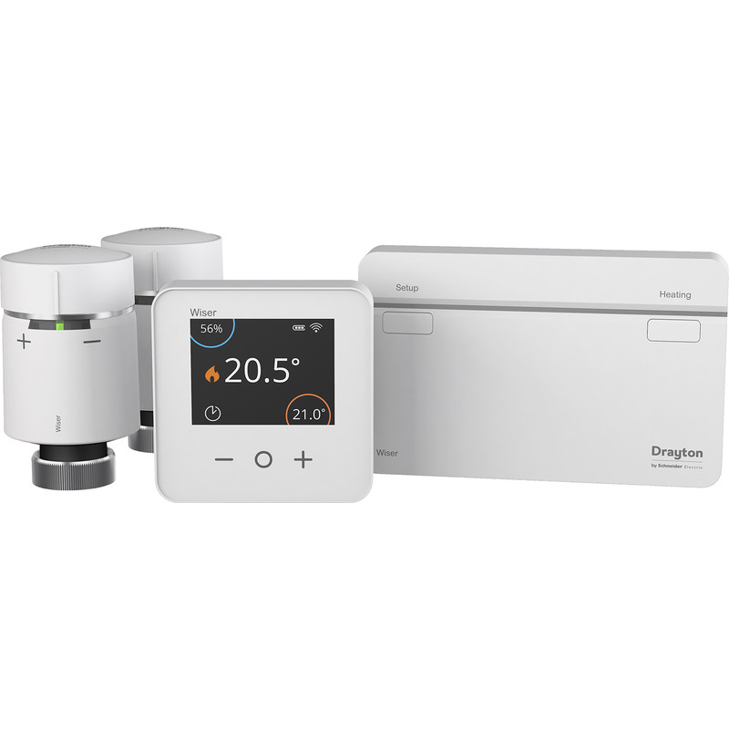
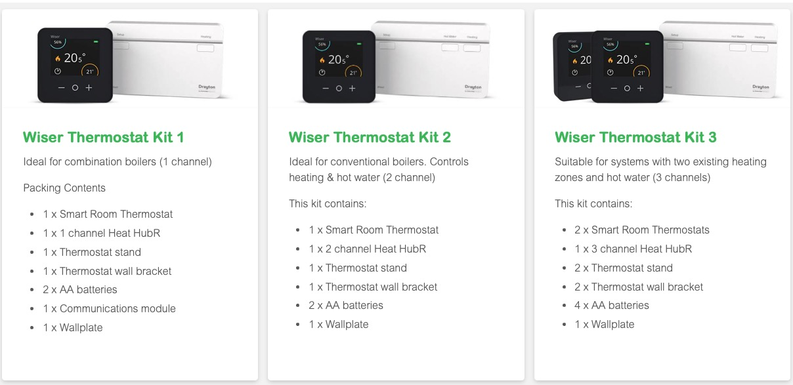

| Image | User Manual | Installation Manual | Model | Info | ||
|---|---|---|---|---|---|---|
 |
ViewDownload | ViewDownload | Drayton LP111 | |||
| ViewDownload | ViewDownload | Drayton LP111Si | ||||
 |
ViewDownload | ViewDownload | Drayton LP112 | |||
| ViewDownload | ViewDownload | Drayton LP241 | ||||
| ViewDownload | ViewDownload | Drayton LP241Si | ||||
| ViewDownload | ViewDownload | Drayton LP522 | ||||
| ViewDownload | ViewDownload | Drayton LP522Si | ||||
| ViewDownload | ViewDownload | Drayton LP711 | ||||
| ViewDownload | ViewDownload | Drayton LP711Si | ||||
| ViewDownload | ViewDownload | Drayton LP722 | 2 channel, 7 day | |||
| ViewDownload | ViewDownload | Drayton LP722Si | ||||
 |
ViewDownload | ViewDownload | Drayton LP811 | |||
 |
ViewDownload | ViewDownload | Drayton LP822 | |||
 |
ViewDownload | ViewDownload | Drayton LPSi | |||
 |
ViewDownload | ViewDownload | Drayton Motorised Valves | |||
 |
ViewDownload | ViewDownload | Drayton TRV4 | |||
| ViewDownload | ViewDownload | Drayton TRV Commissioning Guide (D34-11) | ||||
 |
ViewDownload | ViewDownload | Drayton Wiser Adapater Guide | |||
 |
ViewDownload | ViewDownload | Drayton Wiser Thermostat Kit 1-2-3 | |||
| ViewDownload | ViewDownload | Drayton Wiser Multizone Kit 1-2 |